Útulná chalupa ve Svratce, obklopená skalami a lesy Žďárských vrchů. Ráj horolezců, turistů i těch, kdo hledají klid.
Nezávazná poptávkaTradiční česká chalupa s duší, kde se potkává pohodlí s kouzlem venkova
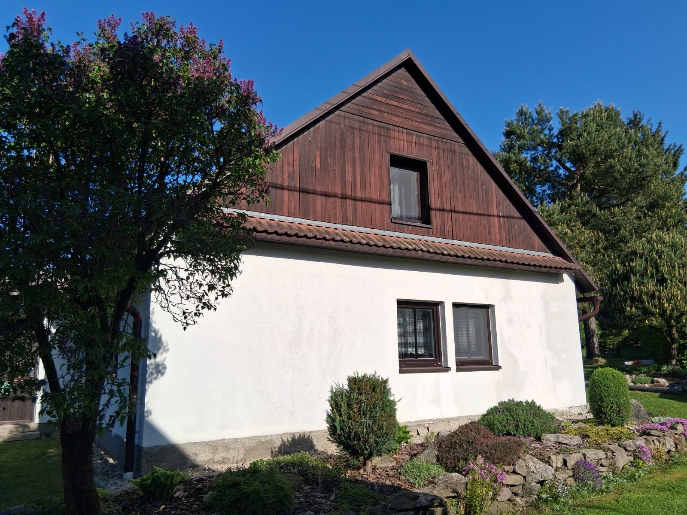
Naše chalupa na adrese Česká Cikánka 2 ve Svratce je ideální základnou pro aktivní dovolenou i odpočinek. Svratka leží přímo na hranici Žďárských vrchů a Železných hor – obklopena skalními masívy, hlubokými lesy a stovkami turistických tras.
Pro horolezce je okolí pravým rájem – skalní útvary Malinská skála, Čtyři palice a Devět skal nabízejí desítky lezeckých cest všech obtížností. Pro turisty a cyklisty tu čeká síť značených tras napříč chráněnou krajinnou oblastí.
Žďárské vrchy jsou chráněnou krajinnou oblastí plnou skalních útvarů, rozhleden a přírodních památek. Lezení, turistika, kolo – vše na dosah.
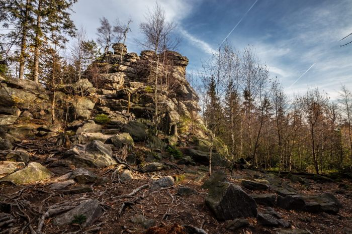
Nejvyšší bod Žďárských vrchů s úchvatným výhledem na celou Vysočinu. Mohutný skalní útvar z ortoruly je přírodní památkou a vyhledávaným cílem horolezců. Na vrcholu rozhledna s panoramatem do všech stran.
📍 8 km od chalupy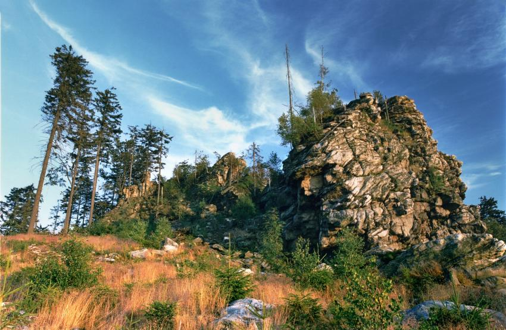
Jedna z nejoblíbenějších lezeckých oblastí Vysočiny. Mohutné rulové bloky vysoké až 15 metrů nabízejí desítky lezeckých cest od začátečnických po pokročilé. Oficiálně povolené lezení v krásném lesním prostředí.
📍 12 km od chalupy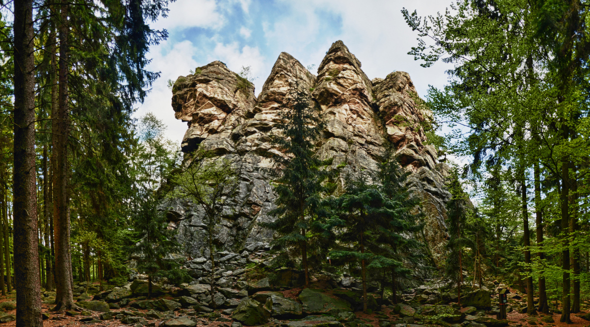
Impozantní skalní věže z ruly (733 m) uprostřed hlubokého lesa. Přírodní rezervace s tajemnou atmosférou a oblíbený cíl pro bouldering i klasické skalní lezení. Unikátní geologický útvar.
📍 10 km od chalupy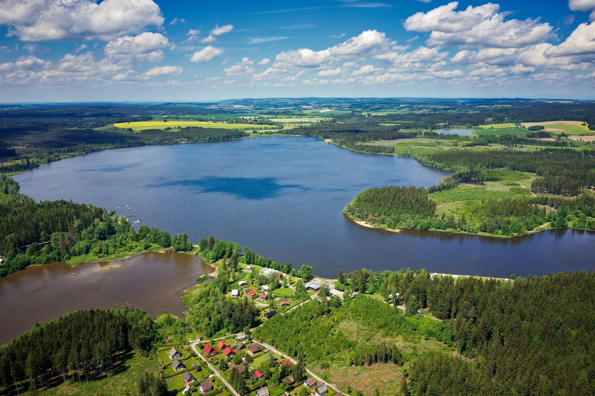
Největší rybník na Vysočině (206 ha) s písečnými plážemi a čistou vodou ke koupání. Ideální pro letní dny s rodinou – paddleboard, rybaření, procházky kolem břehů v chráněné přírodě.
📍 15 km od chalupy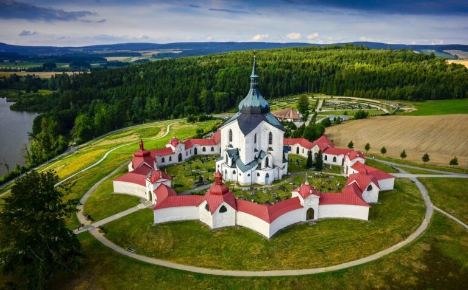
Poutní kostel sv. Jana Nepomuckého ve Žďáru nad Sázavou. Mistrovské dílo barokní gotiky architekta Jana Blažeje Santiniho, zapsané na seznamu světového dědictví UNESCO.
📍 17 km od chalupy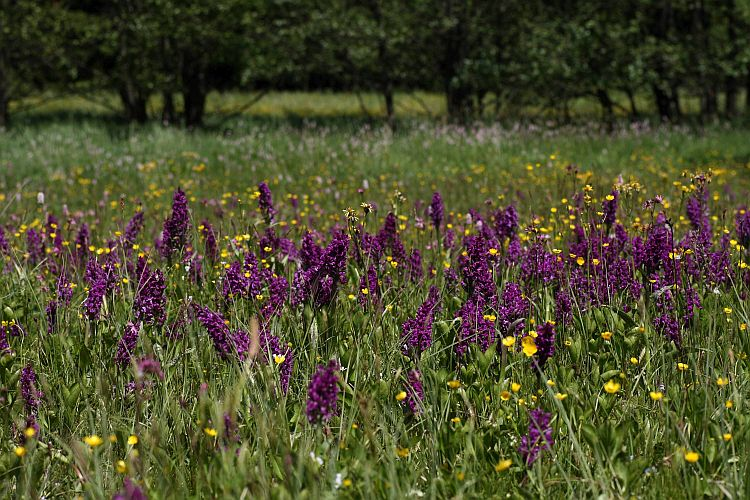
Chráněná krajinná oblast s loukami, rašeliništi a stovkami kilometrů značených tras. Běžkařský ráj v zimě, cyklotrasy a singltreky v létě. Santiniho cyklotrasa vede přímo okolím Svratky.
📍 Přímo v oblastiNahlédněte do naší chalupy a jejího zázemí
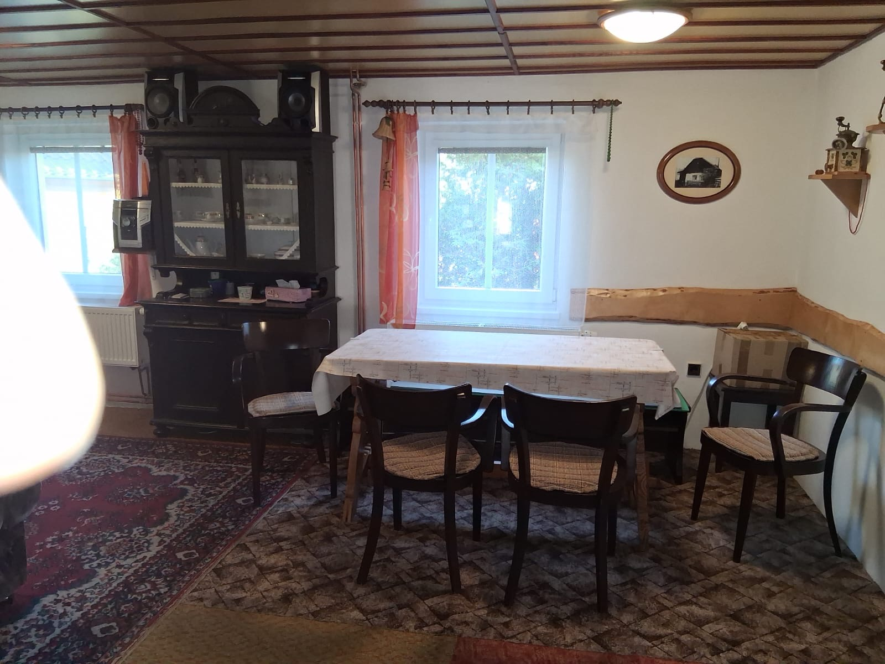
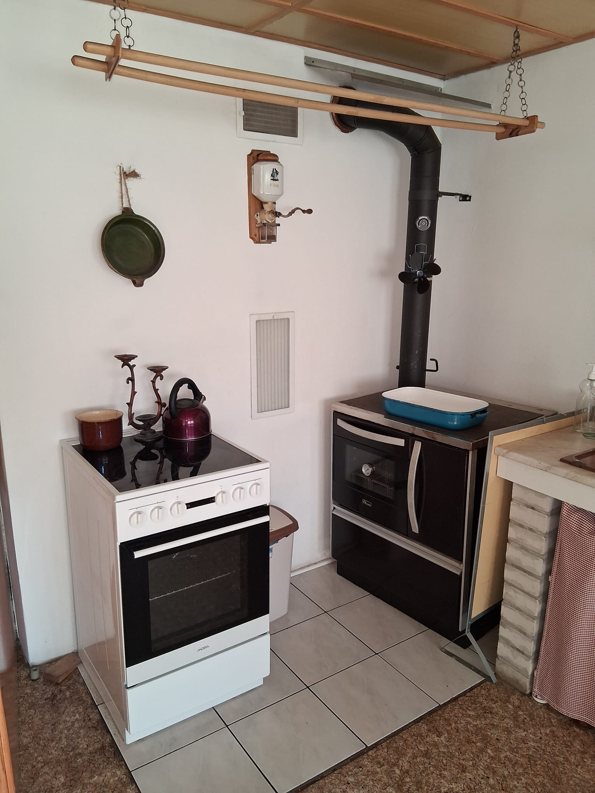
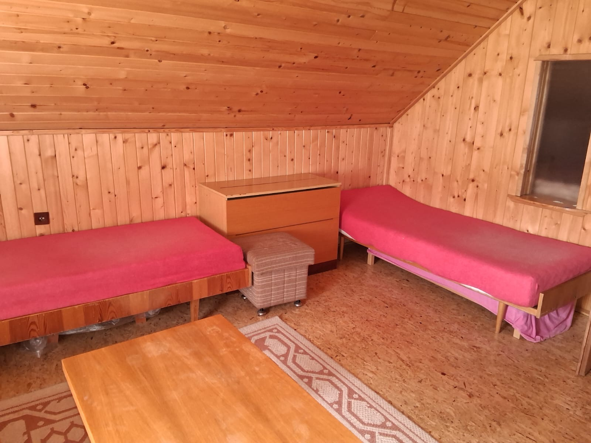
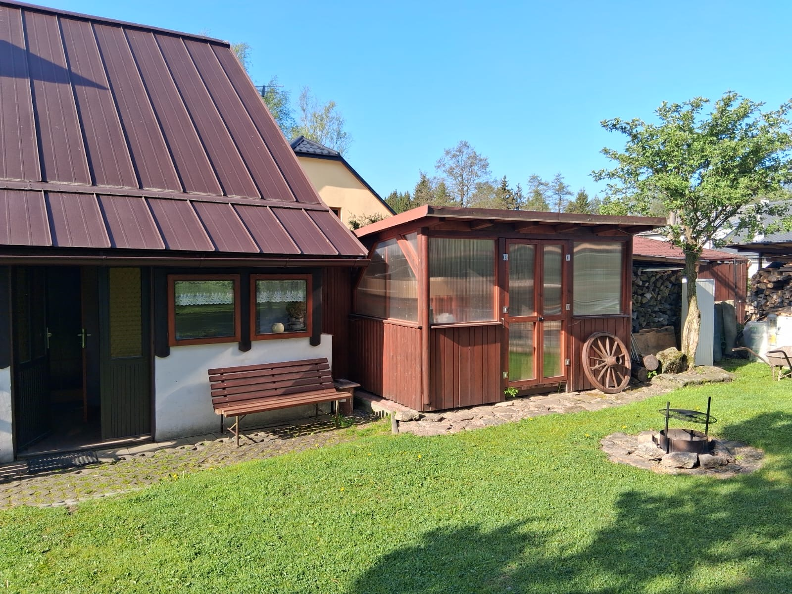
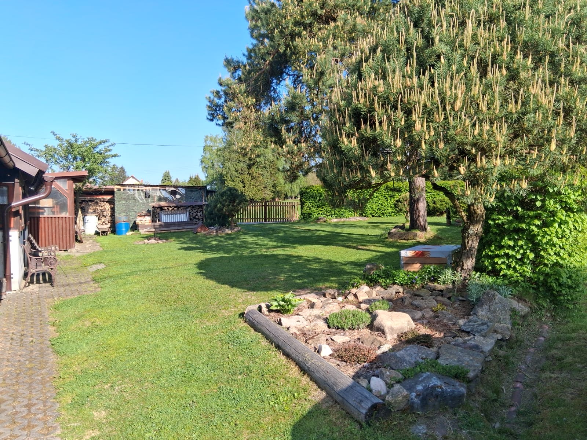
Žďárské vrchy mají co nabídnout po celý rok – od lezení po běžky
Probouzející se příroda, suché skály ideální pro lezení. První cyklovýjezdy a procházky rozkvetlými loukami podél řeky Svratky.
Koupání ve Velkém Dářku, grilování na zahradě, lezení na Malinské skále. Dlouhé večery pod hvězdnou oblohou bez světelného smogu.
Barevné lesy v plné kráse, houbaření, bouldering na Čtyřech palicích. Mlhavá romantika údolí a horký čaj po návratu na chalupu.
Běžecké lyžování přímo za chalupou, zasněžená krajina jako z pohádky. Žďárské vrchy jsou rájem běžkařů – upravené stopy v celé oblasti.
Ubytování je na poptávku. Rádi vám odpovíme na všechny dotazy ohledně termínů, kapacity a ceny.